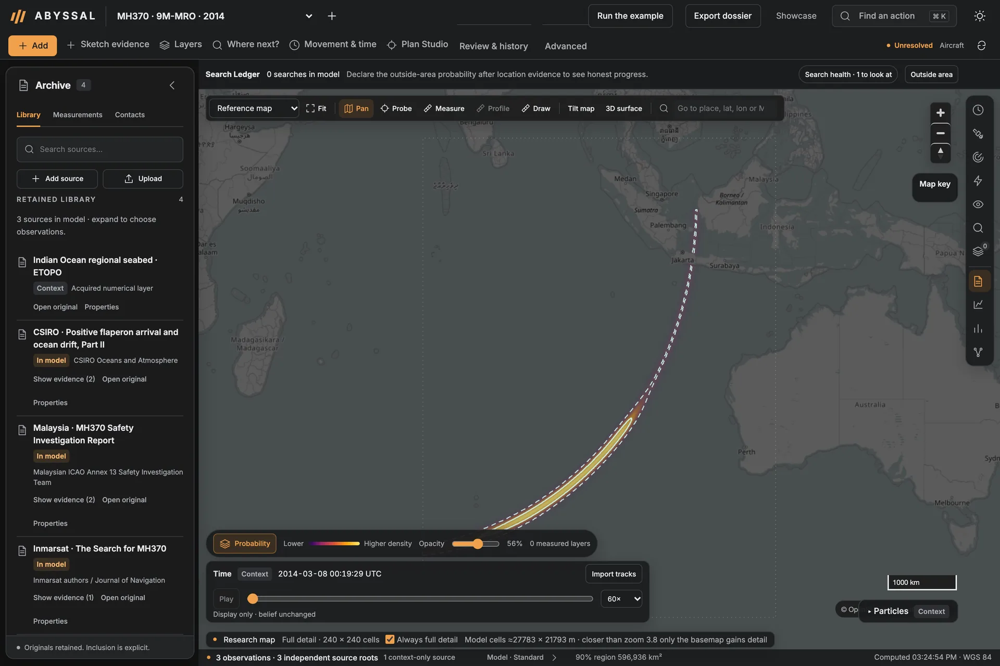
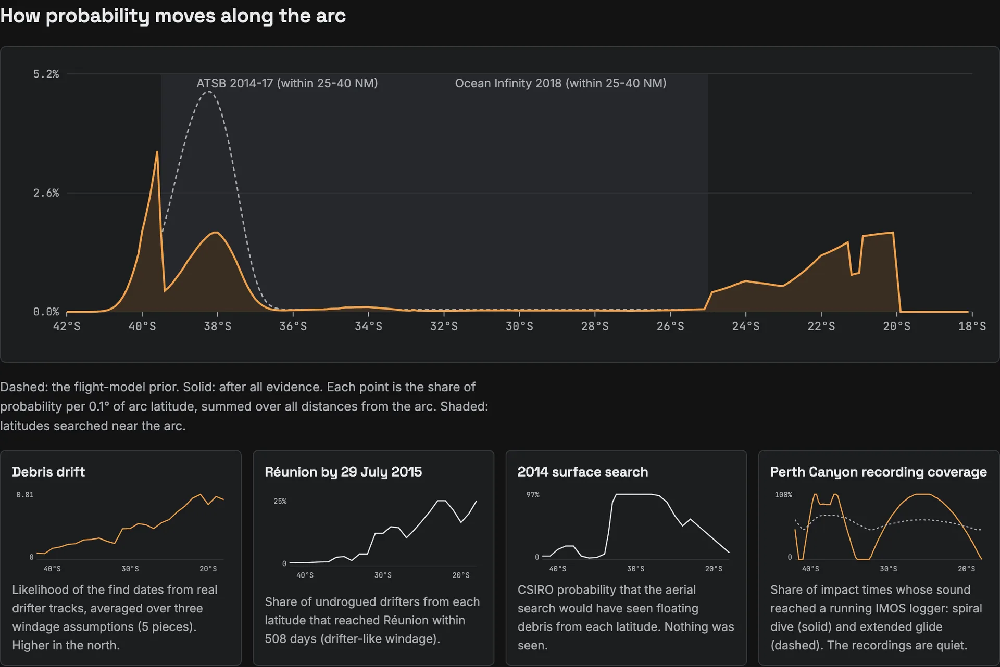
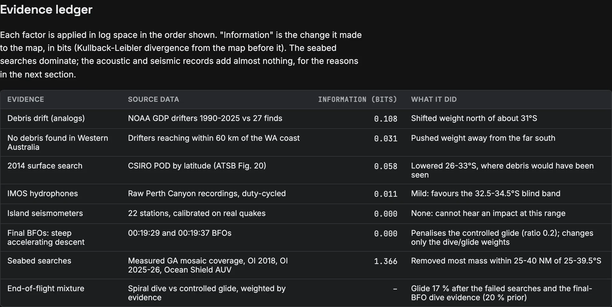
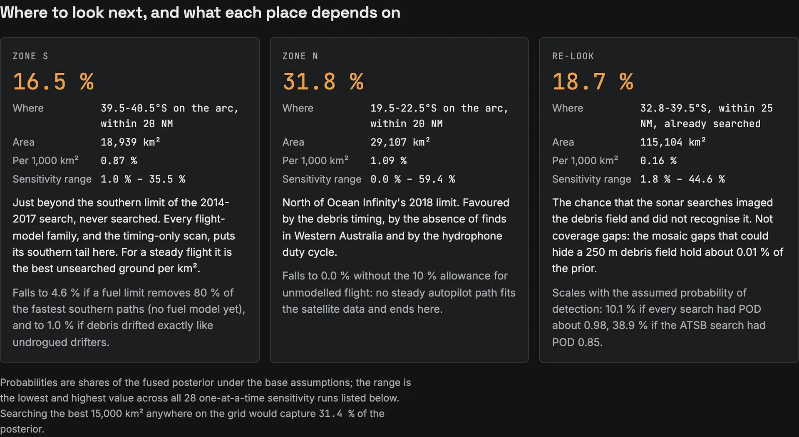
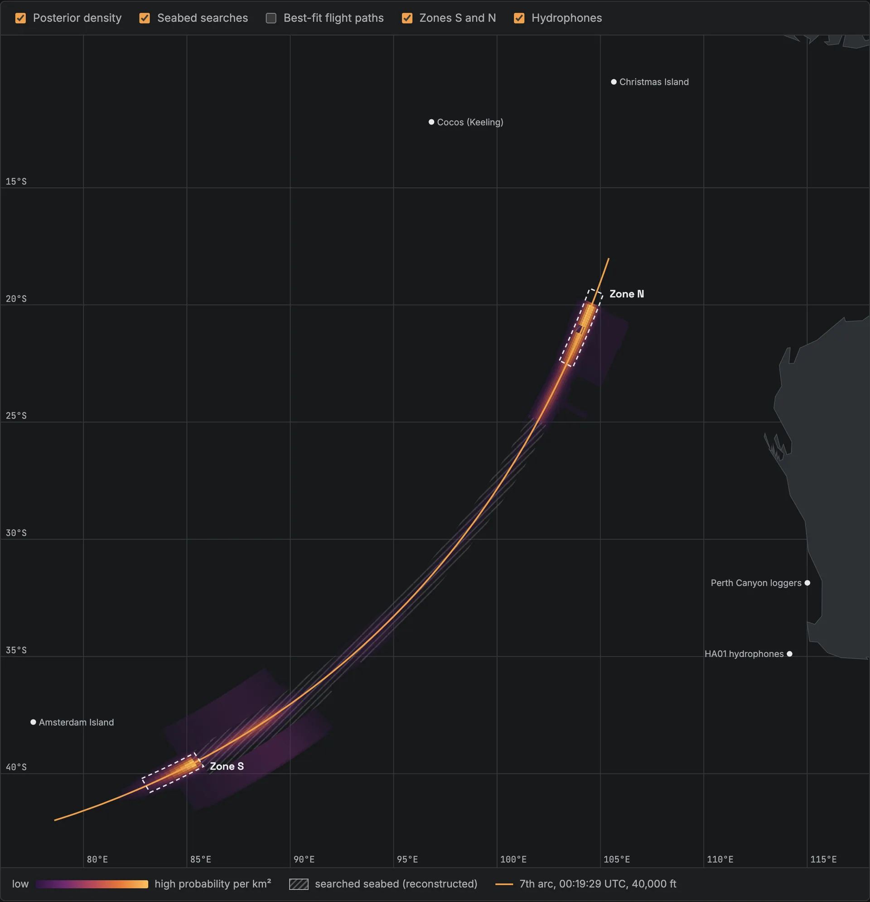

Malaysia Airlines flight 370 disappeared on 8 March 2014 and has not been found. Over twelve years, seabed surveys by the Australian Transport Safety Bureau (ATSB) and Ocean Infinity have imaged more than 230,000 km² of the southern Indian Ocean along the seventh Inmarsat arc without locating the aircraft. What follows is not a detection, nor a claim to have found the wreck. It is a complete, reproducible evidence fusion built inside ABYSSAL from raw public data — treating MH370 as a live physical investigation, auditing every published and fringe lead quantitatively, and asking a single operational question: given everything that was measured and everywhere that was searched, where does the residual probability actually sit?
The investigation enforces three ground rules. First, raw data only, with cryptographic receipts (URL, timestamp, byte size, SHA-256 hash, licence) for every file retrieved. Second, every forward model is calibrated against independent physical truth — ground-station calibrations, the aircraft's own ACARS weather reports, catalogued Indian Ocean earthquakes, published ATSB sonar contacts — before it is allowed to score MH370. Third, every result is conditional on stated assumptions and swept across 28 one-at-a-time sensitivity runs. Nothing is silently admitted to a belief map.
Not found. Two independent satellite channels — timing alone (Doppler discarded) and timing plus Doppler — both place the end of a steady autopilot flight between 37.4°S and 39.7°S on the 7th arc. Measuring the published ATSB Phase 2 sonar mosaic directly from pixels (~60 m resolution) shows 99.67% of the ±25 NM band across 36.0°S–39.45°S is imaged: coverage gaps can hide a 250 m debris field for only 0.013% of the prior. If the flight was steady, the wreck is in one of three places: just south of the searched limit (39.45°S–40.5°S, never searched — 36.0% of the steady posterior, ~29% after second-round acoustic and altimeter nulls, ~3× the density per km² of any alternative), inside the densest searched core (37.5°S–38.6°S) imaged but unrecognised in shadowed terrain, or beyond ±25 NM after a glide that the final two Doppler measurements argue against (glide posterior weight 0.17).
01The public record, and what had to be rebuilt
At 16:42 UTC on 7 March 2014, Boeing 777-200ER 9M-MRO departed Kuala Lumpur for Beijing. Thirty-eight minutes later, crossing waypoint IGARI over the South China Sea, its secondary transponder stopped responding. Malaysian military primary radar tracked an aircraft turning back across the Malay Peninsula, passing north of Penang, and flying northwest along airway N571 past waypoint MEKAR until 18:22:12 UTC. After that, no radar saw it again.
What remained was an unplanned measurement network: an Inmarsat Classic Aero satellite data unit (SDU) aboard the aircraft that continued answering hourly log-on interrogations from the geostationary satellite Inmarsat-3F1 until 00:19:29 UTC, plus 27 confirmed or likely items of debris washed ashore on Réunion, Madagascar, Mozambique, Tanzania, and South Africa from July 2015 onward.

Most secondary commentaries on MH370 treat previous reports as fixed priors, copying search boxes or hand-drawn curves from PDFs. That introduces hidden assumptions and makes it impossible to check whether two lines of evidence genuinely agree or merely share the same error. In ABYSSAL, the corridor is parameterised cleanly in arc coordinates \((s, n)\): arc latitude \(s\) from 42°S to 18°S at 0.05° spacing and signed perpendicular distance \(n\) from −150 to +150 NM at 2.5 NM spacing from the 00:19:29 UTC, 40,000 ft reference arc. Every line of evidence — flight kinematics, ocean drift, Western Australia non-finds, surface search, hydrophones, island seismometers, and seabed sonar — is evaluated as an explicit likelihood surface on that common grid.
02Satellite physics and upper-air winds
Each satellite handshake provides two independent physical observables: the Burst Timing Offset (BTO), measuring total round-trip signal propagation time from the Perth ground earth station to Inmarsat-3F1 to the aircraft and back, and the Burst Frequency Offset (BFO), measuring the received carrier frequency shift caused by relative line-of-sight velocity, satellite inclination drift, and terminal oscillator biases.
Because Inmarsat-3F1 sat in a slightly inclined geosynchronous orbit (\(\approx 1.6^\circ\)), its north–south oscillatory motion relative to the Earth creates a distinct Doppler signature in the BFO that breaks the north–south symmetry of the BTO range rings. Crucially, the aircraft's SDU attempts to pre-compensate its uplink Doppler assuming a stationary satellite at the equator, leaving a residual term \(\Delta f_{\text{comp}}(t)\) sensitive to both latitude and ground-velocity vector.
Validation before use
Before running a single trajectory for MH370, the general Classic Aero forward model was tested against independent published calibrations from Ashton et al. (2015) and Davey et al. (2016):
- Ground calibration (Ashton Table 5, 88 Hz): reproduced to 0.3 Hz.
- Known aircraft state at 17:07 UTC (Tables 7–8): reproduced to ~1 Hz total (~0.6% per physical term).
- All 12 validation rows (Table 9): reproduced to within 1.5 Hz.
That validation step immediately paid for itself: it caught and fixed an inverted downlink Doppler sign on the first implementation (+85 Hz instead of the published −85 Hz at 16:30 UTC) before any flight paths were scored.
ERA5 winds checked against the aircraft itself
A 7-hour autopilot track in the southern Indian Ocean crosses a strong subtropical jet; ground track and heading diverge markedly from airspeed. Hourly ERA5 reanalysis upper-air winds and temperatures (175–350 hPa, 7 March 16:00 to 8 March 01:00 UTC, \(0.5^\circ\) grid across \(46^\circ\text{S}\)–\(14^\circ\text{N}\), \(78^\circ\)–\(112^\circ\text{E}\)) were retrieved from Google Cloud's ARCO-ERA5 archive and checked directly against the aircraft's own ACARS position reports before disappearance:
| ACARS time (UTC, FL350) | Measured wind | ERA5 wind | Temperature diff |
|---|---|---|---|
| 17:01:43 | 069.6° / 17.4 kt | 069° / 19.4 kt | −1.1 °C |
| 17:06:43 | 070.0° / 17.1 kt | 067° / 17.3 kt | −1.1 °C |
Two samples in one region are a sanity check rather than a validation of Southern Ocean winds, and are recorded as such. On the short pre-turn segment after the last primary radar fix at 18:22 UTC (10 NM past MEKAR), continuing directly along airway N571 at 480–500 kt fits the 18:25:27 and 18:28:15 BFOs within 0.6 Hz, but leaves the 18:27–18:28 R1200 BTOs 60–110 μs above prediction. Applying a 12 NM right-of-track lateral offset drops those residuals to 8–48 μs (log-likelihood gain ~15), matching independent analyses. Rather than assuming either, the engine carries lateral offset (0 or 12 NM) as a marginalised parameter across all configurations.
03Flight paths, timing-only confirmation, and the final dive
The wind-aware autopilot solver evaluated 4,400 discrete configurations across three model families using coarse grid search followed by Gauss–Newton optimisation (cross-checked against SciPy nonlinear least squares on ten configurations to confirm identical optima):
- Family A (constant Mach, 1,100 configs): 5 lateral autopilot modes × 5 altitudes × 11 turn minutes × 2 offsets × 2 pre-turn speeds. Geodesic (LNAV) and constant-true-track modes fit all 13 measurements (6 BTO, 7 BFO) cleanly (\(\chi^2 \approx 6\)); constant heading and magnetic-track modes fit poorly (\(\chi^2 = 30\text{–}210\)). Crossing at 00:19:29 UTC: 5–95% latitude 39.4°S–37.2°S, median 38.15°S.
- Family B (falling Mach — 0.004 or 0.008/hr long-range-cruise stand-in, 2,200 configs): Best \(\chi^2 = 5.95\); geodesic and true-track solutions end 39.8°S–37.4°S (median 38.50°S). Notably, a falling speed schedule improves magnetic-track and true-heading fits substantially (\(\chi^2: 30 \to 18.6\) and \(35 \to 18.2\), ending at 33.8°S and 35.9°S), though they remain markedly worse than geodesic/true track.
- Family C (weak assumptions: Mach 0.55–0.86, inflated BFO noise 15 Hz, 1,100 configs): Best \(\chi^2 = 3.6\); 5–95% latitude still 39.65°S–37.25°S (median 38.35°S).
The BTO-only test: what if the Doppler model were wrong?
A common objection to Southern Ocean solutions is that BFO physics is subtle and depends on SDU oscillator drift. To test whether BFO is carrying the entire inference, we dropped every BFO measurement completely and ran a 5,040-cell timing-only scan (Mach 0.45–0.86, profiling control angle on a 1° grid with Gauss–Newton refinement and Laplace integration).
The result was decisive: 90% of the timing-only mass still ends between 39.7°S and 37.4°S (median 38.4°S). Every steady cell north of 36°S carries posterior weight below \(10^{-9}\) — slow northern paths fit the curvature of the six BTO range rings roughly \(10^{10}\) times worse than Mach 0.82–0.85 tracks (472–486 kt ground speed, best \(\chi^2 = 3.1\) for 6 timing points). Better still, when those timing-only tracks are evaluated against the BFO measurements they never saw, their BFO residual RMS is 3.7–5.9 Hz — right at the published BFO noise floor. The two satellite channels agree independently. Any solution ending north of 36°S requires a non-steady flight: turns, holds, or major speed changes after 19:41 UTC.
End-of-flight kinematics: dive versus glide
At 00:19:29 UTC, following fuel exhaustion around 00:17 UTC, the auxiliary power unit (APU) restarted automatically and initiated a satellite log-on. Two BFO transmissions arrived eight seconds apart (00:19:29 and 00:19:37 UTC). Re-deriving vertical speed from those two bursts in ABYSSAL's satcom model gives a downward rate of ~3,100–6,000 ft/min at 00:19:29, accelerating to ~13,600–16,500 ft/min eight seconds later — an average downward acceleration of roughly 0.67 g.
That is the kinematic signature of an unpiloted, steepening dive rather than a controlled glide. Simultaneously, the recorded carrier-to-noise ratios (\(C/N_0 = 40.6\) and \(43.4\text{ dB-Hz}\), zero bit errors) confirm that at ~39° satellite elevation the aircraft had not yet pitched beyond ~35° nose-down eight seconds into the descent, keeping the top-mounted antenna in view. Applying the final-BFO glide/dive likelihood ratio (base \(0.2\), swept \(0.05\text{–}0.5\)) cuts the posterior weight of an extended glide (\(|n| \le 110\text{ NM}\)) from 0.50 down to 0.17, keeping 82.9% of the posterior within 25 NM of the 7th arc.
04Measuring the seabed search from pixels, not prose
In Bayesian search, negative evidence dominates the posterior — which means an error in your search-coverage polygon corrupts everything downstream. An earlier draft of this fusion read search widths from text summaries and inadvertently over-credited Ocean Infinity's 2018 search with 25–40 NM strips across 32.5°S–36°S.
To eliminate prose-reading errors, ABYSSAL fetched the public Geoscience Australia Phase 2 bathymetry/sonar mosaic directly (zoom 11, 60.5 m pixels) and measured the imaged fraction of every corridor cell pixel by pixel. Total measured area: 120,522 km², matching the ATSB's reported ~120,000 km². The pixel measurement immediately revealed a crucial structural detail: north of ~35.5°S, the ATSB's ±25 NM band was only 42–69% imaged — explaining directly why Ocean Infinity started its 2018 campaign in that exact "First Principles Review" corridor. Ocean Infinity 2018 (±25 NM, 36°S–25°S) is now credited strictly where the ATSB mosaic has no pixels, and Ocean Shield's 2014 AUV box around the acoustic pinger area (~21°S, 860 km²) is included explicitly.
Can sonar mosaic gaps hide the wreck?
A frequent hypothesis is that MH370 lies inside the ATSB searched core, hidden in a data holiday between sonar swaths. Measuring the stitched zoom-11 mosaic across the core band (36.0°S–39.45°S, within ±25 NM of the arc: 59,600 km²) answers this directly: 99.67% of the area is imaged, leaving just 198 km² of gaps. For a debris field of radius \(R\) to be missed by coverage alone, its centre must sit at least \(R\) from every imaged pixel. Integrating the steady-flight dive prior over those gap interiors gives:
| Assumed debris-field radius \(R\) | Steady prior mass hidden in mosaic gaps |
|---|---|
| 100 m | 0.017% |
| 250 m | 0.013% |
| 500 m | 0.009% |
| 1,000 m | 0.005% |
The only substantial un-imaged holes (15.6 km² and 51.3 km² near 39.1°S–39.25°S, 85.2°E–85.4°E, 17–23 NM inside the arc) sit right at the southern edge of the survey. The conclusion is sharp: if the aircraft lies inside the searched band, the survey did not miss it through coverage gaps — it imaged the site and failed to recognise it (through steep terrain, acoustic shadow, or human interpretation).
Re-scanning 1,900 km² of the densest core
To test whether an obvious unflagged debris field sat in the public imagery of the highest-prior ground, we pulled 2,024 zoom-15 tiles (~3.8 m pixels, ~1,900 km² across 37.65°S–38.8°S within 7.5 NM of the arc — roughly 25% of the entire steady prior) and ran them through ABYSSAL's anomaly scorer twice (bright specks per tile, then cluster density against ~2 km surroundings). As a positive control, the detector flagged 16 of the 43 published ATSB contacts (median contact sitting at the 88th percentile of its local window). It surfaced 225 candidate clusters; inspecting the top 40 by eye at 1–4 m resolution showed scarps, ridge crests, volcanic outcrops, swath seams, and isolated boulders — nothing resembling a fan of angular aircraft debris. (Caveat: the public mosaic is ~5 m effective resolution, whereas ATSB analysts reviewed ~1 m raw side-scan.)
05Ocean drift and the north–south tension
Twenty-seven pieces of confirmed or likely 9M-MRO debris washed up across the western Indian Ocean starting with the flaperon on Réunion on 29 July 2015 (508 days after loss). To turn those arrival dates and locations into an honest likelihood surface along the 7th arc, ABYSSAL acquired 36 years of NOAA Global Drifter Program 6-hourly tracks (1990–2025: 6.0 million fixes, 4,700 drifters, 3.5 million undrogued fixes).
Our first attempt — fitting a \(1^\circ\), 4-day Markov transition matrix to the drifter archive — failed a direct empirical sanity check and was rejected as over-diffused. The Markov chain predicted a ~5% chance per debris item of reaching Réunion within 508 days from every latitude along the arc, including 39°S. Checking the raw drifters directly showed why that was wrong: out of 72 real undrogued drifters passing near 39°S, zero reached Réunion within 508 days.
Replacing the Markov chain with direct censored drifter analogs (tracking every real undrogued drifter passing within 200 km of each arc point) produced a sharp physical gradient:
- 37°S–40°S: 0/60 to 0/80 drifters reached Réunion within 508 days.
- 32°S–36°S: 0–1 out of 40–60 drifters.
- 25°S–31°S: 3–5 out of 27–46 drifters; rising to 4/18 at 23°S.
Under drifter-like windage across five independent find groups, the drift log-likelihood favours ~29°S over ~38°S by roughly a factor of 20. However, CSIRO's replica tank tests showed the buoyant, partially submerged flaperon drifted substantially faster than standard undrogued surface drifters due to higher leeway windage. Stretching the travel horizon by 1.5× (to stand in for higher windage) flattens the north–south preference to a modest factor of 2–3. Meanwhile, two other surface observations pull in the opposite direction: no MH370 debris was ever found on the Western Australian coast (which strongly penalises the southernmost tail when weighted heavily), and CSIRO's analysis of the March–April 2014 aerial surface search (ATSB Fig. 20) assigns nearly 100% probability of sighting floating debris from impacts between 26°S and 33°S — where nothing was seen.

06Everything that did not work: leads tested and closed
In a high-profile disappearance, false positives multiply faster than facts. Every major acoustic, seismic, radio, optical, and witness lead was rebuilt from primary archives, calibrated against real physical controls, and tested statistically. Almost every one closed as a null result — and documenting why each failed is as important as the residual map itself.
- 22 island & coastal seismometers (T-phase back-projection) — closed, flat likelihood: 6–9 March 2014 FDSN waveforms across Cocos, Christmas Island, Amsterdam, Kerguelen, Diego Garcia, Maldives, Réunion, and Western Australia. Calibrated on real earthquakes from the same four days: detected Carlsberg Ridge \(M_w 5.07\) (\(p = 0.0002\)) and Central Indian Ridge \(m_b 3.99\) (\(p = 0.003\)). Capped MH370 hypothesis windows returned \(p = 0.29\text{–}0.95\). Uncapped spikes (\(p = 0.03\text{–}0.07\)) were traced directly to two uncatalogued local earthquakes (Christmas Island at 01:16:11 UTC and Réunion at 01:26 UTC). The network cannot hear an aircraft impact across 1,300+ km.
- IMOS hydrophones (Perth Canyon 3315/3376, Scott Reef 3250, Portland 3274) — weak / quiet: 1.05 GB of raw 6 kHz CMST logger audio plus 384 newly acquired Portland files covering Zone S (01:14:46–01:19:53 UTC). Clock-checked against Curtin's 01:33:44 (15.6 dB) and 05:03:01 (17.8 dB) reference events and calibrated against same-day \(m_b 4.0\) earthquakes. Revealed an interleaved duty-cycle blind band (5 min in 15, offset by 5 min) leaving 0–40% coverage across 32.5°S–34.5°S. Covered Perth Canyon windows are quiet (3–8 dB, \(p = 0.36\text{–}0.97\)), and a 4-hydrophone weak-signal stack across 97 arc latitudes shows no standout peak (Zone S stack 0.86 vs null median 3.5, \(p \approx 0.6\)).
- WSPR radio anomalies (time-shift null test) — closed, no signature: Full 145 MB WSPRnet March 2014 archive. Measured anomaly enrichment \(E\) on links passing within 50 km of both the best LNAV path (38.1°S) and best magnetic-track path (33.6°S) against 1,000–4,000 km controls across all 30 other nights of the month. Across ~1,630 crossing spots on 7–8 March, \(E = 0.91\) (SNR jumps \(\ge 6\text{ dB}\)) and \(E = 0.62\) (non-zero drift) — crossing links were less anomalous than controls (\(p = 0.19\text{–}0.48\)).
- MODIS optical scan & fuel-sheen drift — inconclusive / blind: NASA GIBS Terra and Aqua true-colour imagery (~250 m, 7–10 March 2014) paired with OSCAR currents + 3% NAVGEM wind drift of residual oil and hydraulic fluid (~1 m³). Zone S was 91–96% cloud-covered on 8 March; clear water produced 30–540 small contrast specks per 10,000 km² even on the 7 March control day; outside sun glint, 8-bit ocean pixel spread (~0.93 DN) cannot resolve a 1 m³ sheen.
- Jason-2 radar altimeter \(\sigma^0\) blooms — weak null on 40°S: All 128 GDR-D/F passes (8–12 March), 22 crossing the region. Pass 077 overflew the predicted sheen of a 40.0°S impact 11 hours after crash (8 March 11:25 UTC, 7 footprints within 32 km): flat backscatter (+0.05 dB at 6.9 m/s wind; ~10–15% overlap probability).
- Maldives witness sighting (Kudahuvadhoo, 01:15 UTC) — rejected: Kudahuvadhoo lies ~2,000 km inside the 00:19:29 UTC 7th arc (BTO residual \(-13,200\;\mu\text{s}\) against \(29\text{–}62\;\mu\text{s}\) noise) and an hour after the final log-on.
- Overflight seismometers, contrails, Gaofen-1 & DART buoys — all closed by physics: Malaysian stations MY.KUM and MY.IPM sample at 20 sps (Nyquist 10 Hz, below jet noise) with no timing match; MODIS night band 31 shows non-unique cirrus streaks on a busy route; the 18 March Gaofen-1 object (44.95°S, 90.22°E) sits 732 km off-arc (requiring 0.85 m/s mean drift for 10 days); and a ~4 GJ impact puts ~0.5 mm into 10–30 s waves at 1,000 km, filtered out at 4 km DART depth and buried in metre-scale swell.
Before capping single-station contributions in the 22-station seismic back-projection, three MH370 acoustic hypotheses hit \(p = 0.03\text{–}0.07\) — the exact kind of marginal statistical spike that routinely launches press releases. Inspecting the underlying seismograms exposed the illusion immediately: all three were driven by two uncatalogued local earthquakes (Christmas Island at 01:16:11 UTC with an impulsive vertical P-wave followed 35 s later by horizontal S-waves ~290 km away, and Réunion at 01:26 UTC). A statistical coincidence that disappears when you look at the raw physics is not a signal.
07Fusing the ledger and shrinking the search area
Combining every factor in double-precision log space on the arc corridor produces a transparent information ledger measured in bits — the Kullback–Leibler divergence \(D_{\mathrm{KL}}\) each dataset actually contributed to the map:

Because the ATSB and Ocean Infinity searched almost the entire high-prior steady-flight peak without finding the wreck, the residual probability splits cleanly across four candidate zones. Ranking them by posterior probability per 1,000 km² of new search — under three explicit readings of the flight — clarifies the operational decision immediately:
| Candidate zone | Area (km²) | Steady flight | Steady + fuel trim (×0.2 south) | Full mixture (+10% non-steady) |
|---|---|---|---|---|
| 1. South extension (39.45°S–40.5°S, ±25 NM, unsearched) | 23,395 | 36.0% (1.54) | 10.6% (0.45) | 17.0% (0.73) |
| 2. Core re-look (36.0°S–39.45°S, ±25 NM, imaged) | 63,708 | 34.4% (0.54) | 50.1% (0.79) | 16.0% (0.25) |
| 3. Wide glide belt (60–110 NM outside arc) | 87,103 | 13.9% (0.16) | 19.4% (0.22) | 6.5% (0.07) |
| 4. North arc (18°S–25°S, ±25 NM) | 83,113 | 0.0% (0.00) | 0.0% (0.00) | 46.5% (0.56) |
Values in parentheses are posterior percentage points per 1,000 km² of search area.

Reading the map without fooling yourself
Three operational conclusions stand out from the fused numbers:
- For a steady flight (supported independently by both BTO and BFO), the south extension (39.45°S–40.5°S, ±25 NM) is the single highest-density unsearched block on the planet: 36.0% of the steady posterior in 23,395 km² (1.54% per 1,000 km² — roughly three times the density of any other region). Even after folding in the two weak second-round nulls touching that zone (IMOS Portland quiet at assumed POD ≤ 0.2 and Jason-2 pass 077 flat at 10–15% hit chance), the zone scales by ~0.7 to ~29%, still roughly twice the density of a core re-look. Searching the optimal 15,000 km² for a steady flight captures 40% of the posterior, all between 40.2°S and 37.5°S.
- A targeted AUV re-look of the densest core (37.5°S–38.6°S within ±15 NM) takes first place if fuel physics rules out the fastest southern tracks: Zone S relies on trajectories flying Mach 0.84–0.85 continuously from 17:07 to 00:17 UTC. If a full 777-200ER fuel-burn model trims 80% of those fast southern paths, the core re-look jumps to 50.1% of the steady posterior — aimed specifically at rugged terrain where towed side-scan returned acoustic shadow or low-confidence imagery, not coverage gaps.
- Zone N (18°S–25°S) is a diagnostic direction, not a ship target: Although it carries 46.5% of the full mixture (and 31.8% in the 19.5°S–22.5°S sub-box), it has zero steady flight paths behind it. It exists exclusively through the 10% uniform allowance for unmodelled non-steady flight, and its hotspot migrates to whatever northern boundary the grid allows (18.5°S). You do not send a survey vessel to a grid boundary; you go looking for the physical evidence that either builds a real flight path there or rules it out.

08Four measurements that would settle it
The entire point of a sensitivity-swept Bayesian ledger is that it tells you which missing measurement carries the most value of information before another ship leaves port. Four concrete pieces of data would break the current deadlock:
- A high-fidelity fuel-burn model for Mach 0.84–0.85 steady flight (17:07–00:17 UTC): Directly decides between item 1 (the unsearched south extension, 39.45°S–40.5°S) and item 2 (re-looking shadowed terrain in the 37.5°S–38.6°S core).
- ATSB and Ocean Infinity low-confidence and acoustic-shadow polygons: Pixel counting already eliminated mosaic gaps (0.013%). The remaining uncertainty inside searched ground is where steep bathymetry degraded side-scan detection probability.
- Measured leeway windage on real Boeing 777 debris items (beyond the flaperon): Flap fairings, composite panels, and interior pieces govern whether the 27 finds genuinely pull north of 32°S or sit comfortably with a 38°S–40°S origin.
- CTBTO hydroacoustic station HA01 (Cape Leeuwin) and HA08 (Diego Garcia) recordings for 8 March 2014: Public FDSN archives only begin serving HA01 waveforms around 2020. Applying the exact duty-cycle and calibration method built here for IMOS loggers to continuous SOFAR-channel 2014 recordings would turn a weak acoustic constraint into a decisive one.
Limits remain explicit: the steady flight families allow one turn after 18:22 UTC and carry no integrated fuel constraint; seabed coverage is measured from the published mosaic (unpublished raw passes may cover more); and nothing in this analysis has been admitted into an operational prior. What ABYSSAL delivers is what a rigorous physical investigation should deliver: the full chain from raw bytes to residual probability, every dead end closed with numbers, and an exact ranking of what to measure next.